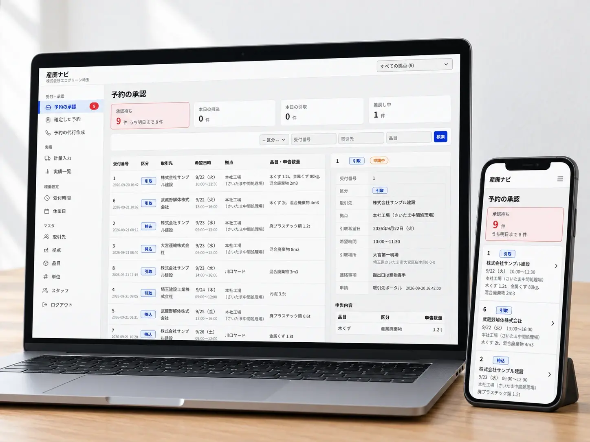

01Problem
システムづくりで、こんなお悩みはありませんか。
- パッケージが業務に合わない業務に合わせて必要な分だけ開発
- Excelやアクセスの管理が限界Webシステムに置き換え
- ベンダーに現場の話が通じない現場出身のチームが要件を整理
- 一度にすべてつくる予算はない小さく始めて段階的に拡張
- 紙の帳票の入力に手間がかかるAIで読み取り・自動入力
- データはあるが活かせていないダッシュボードで見える化
業務の整理から、一緒に始めましょう。
03Case
自社サービスも、同じチームでつくっています。

産廃予約NAVI
産業廃棄物中間処理業の搬入予約と受入管理のシステムを、現場へのヒアリングから設計・開発しました。予約の受付から計量・実績までをつなぎ、パソコンとスマートフォンの両方で使えます。
04Flow
開発の進め方
- Step 01
ヒアリング・業務整理
現場の業務とお困りごとを伺い、システムにする範囲を整理します。
- Step 02
要件定義・お見積り
必要な機能と優先順位を決め、最初に作る範囲と費用をご提示します。
- Step 03
開発・現場での検証
小さく作って現場で試し、使い勝手を確かめながら改善します。
- Step 04
運用・拡張
稼働後の保守・運用に加え、効果を見ながら機能を広げます。
05FAQ
よくあるご質問
Qどのくらいの規模の開発から依頼できますか。
A
小さな業務ツールから対応します。まずは一部の業務に絞って開発し、効果を確かめてから広げる進め方をおすすめしています。
Q物流以外の業界でも依頼できますか。
A
可能です。現場の業務がある業界であれば、業種を問わずご相談ください。
Q稼働後の保守もお願いできますか。
A
対応します。障害対応、軽微な改修、機能追加まで、保守の範囲をご相談のうえ決めます。
Q要件がまだ固まっていません。
A
問題ありません。業務の整理からお手伝いし、要件定義もお引き受けします。
Contact
つくりたいもの、困っている業務を
お聞かせください。
要件が固まっていなくても大丈夫です。ご相談は無料です。